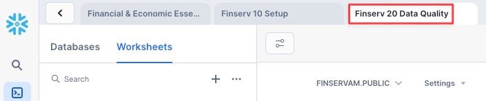
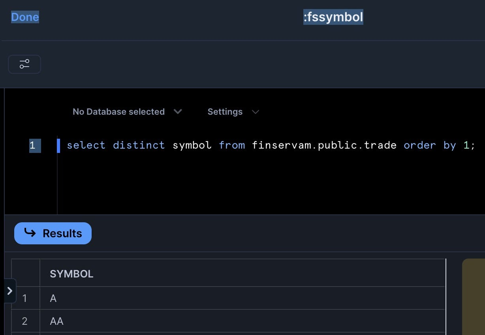
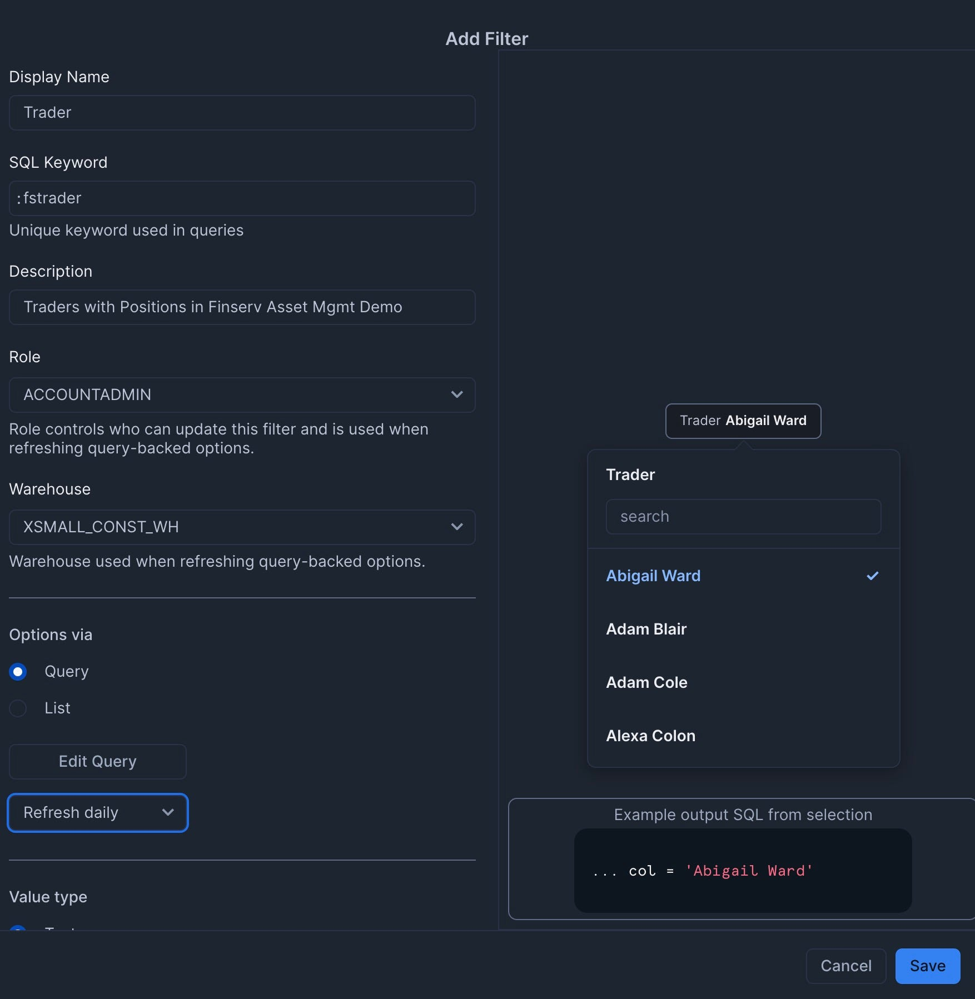
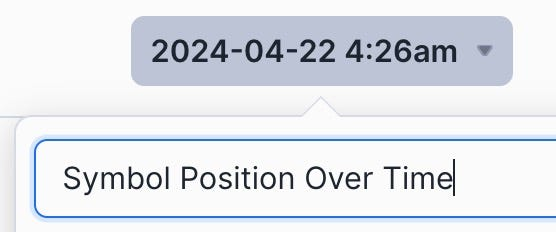

Data silos have been a significant problem in the Financial Services industry. During the Global Financial Crisis of 2008, firms without a Single Version of the Truth (SVOT) made multi-million dollar trading decisions without visibility into their risk, exposure, and the cascading impact of their positions. These data silos led to multi-billion dollar losses and bankruptcies.
In this guide, you'll build a Financial Services Asset Management demo in Snowflake that scales to handle 3 billion synthetic trades while providing real-time cash and profit/loss calculations. You'll learn how to leverage Snowflake's unique architecture to scale compute resources up and down as needed, create a dashboard for monitoring positions, and implement DevOps practices like zero-copy cloning and time travel.
What You'll Learn
- How to query free stock market history data instantly without copying or moving data
- Creating synthetic traders and billions of trades using Python and SQL
- Scaling compute resources up and down to optimize performance and cost
- Implementing cluster keys and auto-clustering for performance optimization
- Creating interactive dashboards with filters for business users
- Using DevOps features like zero-copy cloning and time travel
What You'll Build
A complete Financial Services Asset Management demo with:
- A database of 3 billion synthetic trades
- Real-time position, cash, and profit/loss calculations
- An interactive dashboard for monitoring trading positions
- DevOps capabilities for testing and rollback

This is powered by four SQL Worksheets and a Python Function:

What You'll Need
- Access to a Snowflake account (a free trial on Standard Edition will suffice)
Mount a Free Data Share
First, we need to mount a free data share containing financial market data:
- Log into your Snowflake account
- Navigate to the Marketplace
- Search for "Snowflake Data: Finance & Economic Essentials"
- Click "Get" to mount this free share as a database named "Snow_Finance_Share"
- Grant the PUBLIC role access to the database

Create the Setup Worksheet
Now we'll create our first SQL worksheet to set up the environment:
- Navigate to Worksheets Mode
- Click the Plus Symbol (+), then SQL Worksheet

- Click the Ellipsis and rename the script to "Finserv 10 Setup"

- Copy and paste the following SQL:
-- Create role
use role accountadmin;
create role if not exists finservam_admin comment = 'Ownership of finservam database and demo';
-- Create compute
create warehouse if not exists finservam_devops_wh
with warehouse_size = 'xsmall' auto_suspend = 120 initially_suspended = true comment = 'Financial Services DevOps Compute';
create warehouse if not exists xsmall_const_wh
with warehouse_size = 'xsmall' auto_suspend = 60 initially_suspended = true comment = 'Constant so should always be XS and not resized';
-- Permissions are granular to meet your requirements
create database if not exists finservam comment = 'Financial Service Asset Management';
grant ownership on database finservam to role finservam_admin;
grant ownership on schema finservam.public to role finservam_admin;
grant ownership on warehouse finservam_devops_wh to role finservam_admin;
grant ownership on warehouse xsmall_const_wh to role sysadmin;
grant monitor, operate, usage on warehouse xsmall_const_wh to role finservam_admin;
grant role finservam_admin to role sysadmin;
use schema finservam.public;
create schema if not exists transform comment = 'for silver layer transformations in a medallion architecture. generally not meant for end user visibility';
grant ownership on schema transform to role finservam_admin;
use schema finservam.public;
use warehouse finservam_devops_wh;
- Click the Inverted Chevron to Run All

Create the "Finserv 20 Data Quality" Worksheet
- Create a new SQL Worksheet named "Finserv 20 Data Quality"

- Copy and paste the following SQL:
-- setup
use role finservam_admin;
use warehouse finservam_devops_wh;
use schema finservam.public;
-- Verify Data Marketplace Share
select *
from Snow_Finance_Share.cybersyn.stock_price_timeseries
where ticker = 'SNOW' and variable = 'post-market_close' order by date;
-- transform.exclude_symbol
create or replace table transform.exclude_symbol
comment = 'Exclude Symbols that have ever had a price less than 1 cent or greater than $4500'
as
select distinct ticker symbol
from Snow_Finance_Share.cybersyn.stock_price_timeseries
where
variable = 'post-market_close'
and primary_exchange_name in ('NASDAQ CAPITAL MARKET', 'NEW YORK STOCK EXCHANGE')
and (value < .01 or value > 4500)
order by 1;
-- stock_history
create or replace transient table finservam.public.stock_history
comment = 'Daily closing prices for NASDAQ & NYSE'
as
select
ticker symbol,
date,
value close,
primary_exchange_code exchange,
asset_class
from Snow_Finance_Share.cybersyn.stock_price_timeseries k
left outer join transform.exclude_symbol e on e.symbol = k.ticker
where
variable = 'post-market_close'
and primary_exchange_name in ('NASDAQ CAPITAL MARKET', 'NEW YORK STOCK EXCHANGE')
order by symbol, date;
--add comment on column
comment on column stock_history.close is 'security price at the end of the financial market business day';
Create Python Faker Function
Next, we'll create a Python function to generate synthetic trader data:
-- Python fake function used to generate synthetic traders
create or replace function fake_py(locale varchar,provider varchar,parameters variant)
returns variant
language python
volatile
runtime_version = '3.8'
packages = ('faker','simplejson')
handler = 'fake'
as
$$
import simplejson as json
from faker import Faker
def fake(locale,provider,parameters):
if type(parameters).__name__=='sqlNullWrapper':
parameters = {}
fake = Faker(locale=locale)
return json.loads(json.dumps(fake.format(formatter=provider,**parameters), default=str))
$$;
-- Verify English & Chinese fake names
select fake_py('en_US','name',null)::varchar as FAKE_NAME from table(generator(rowcount => 10));
select fake_py('zh_CN','name',null)::varchar as FAKE_NAME from table(generator(rowcount => 10));
Run the entire worksheet to create the necessary tables and functions.
Create the Trades Worksheet
- Create a new SQL Worksheet named "Finserv 30 Billions of Trades"
- Copy and paste the following SQL to set variables and create synthetic portfolio managers:
-- Set Variables (which we can use to scale up and down) and fake Portfolio Managers (PM)
-- Set context
use role finservam_admin; use warehouse finservam_devops_wh; use schema finservam.public;
-- Set Variables
set limit_trader = 300; //on xxlarge will create ~3B trades
set limit_pm = $limit_trader / 10; //Every Portfolio Manager (PM) will have about 10 traders reporting to her.
-- Portfolio Manager (PM)
-- Unique number generator
create or replace sequence pm_id;
create or replace transient table pm
comment = 'PM is the Portfolio Manager who manages the traders' as
select
fake_py('en_UK','name',null)::varchar as PM,
pm_id.nextval id
from table(generator(rowcount => $limit_pm));
Create Synthetic Traders
Next, add the code to create synthetic traders:
-- Create Synthetic Traders
-- We don't need a transaction but we demo it
begin transaction;
create or replace transient table trader
comment = 'Trader with their Portfolio Manager (PM) and trader authorized buying power' as
with cte as
(
select
fake_py('en_US','name',null)::varchar as trader,
uniform(1, $limit_pm, random()) PM_id, //random function to assign a PM to a trader
uniform(500, 3500, random())::number buying_power //how much a trader can buy per day
from table(generator(rowcount => $limit_trader))
)
select
t.trader,
pm.pm,
t.buying_power
from cte t
inner join pm on t.pm_id = pm.id
order by 2,1;
comment on column public.trader.PM is 'Portfolio Manager (PM) manages traders';
comment on column public.trader.buying_power is 'Trader is authorized this buying power in each transaction';
commit;
Generate Billions of Trades
Now, we'll scale up our compute resources and generate billions of trades:
-- create billions of trades where action = buy
drop table if exists trade;
-- size up to save time since we are generating billions of trades
alter warehouse finservam_devops_wh set warehouse_size = 'xxlarge' wait_for_completion = TRUE enable_query_acceleration = true;
-- create billions of trades where action = buy
create or replace transient table trade
comment = 'trades made and cash used; unique_key: symbol, exchange, date'
as
select
c.*,
round(buying_power/close,0) num_shares,
close * round(buying_power/close,0) * -1 cash,
t.trader, t.PM
from
(
select
date, h.symbol, h.exchange, 'buy'::varchar(25) action, close
from stock_history h
where year(date) < 2021
) c
full outer join public.trader t
order by 8,2,1; -- Trader, symbol, date
-- create billions of trades where action = hold
insert into trade
select
c.*,
0 num_shares,
0 cash,
t.trader, t.PM
from
(
select
date, h.symbol, h.exchange, 'hold'::varchar(25) action, close
from stock_history h
where year(date) >= 2021
) c
full outer join public.trader t
order by 8,2,1; -- Trader, symbol, date
-- Size down to immediately save credits
alter warehouse finservam_devops_wh suspend;
alter warehouse finservam_devops_wh set warehouse_size = 'xsmall';
Create Cluster Key and Position View
Finally, we'll optimize our table with a cluster key and create a view for position calculations:
-- Create clustered key based on what we sorted
alter table trade cluster by (trader, symbol, date);
-- Cluster_by column
show tables like 'trade';
-- Common-Table Expressions (CTEs) and window functions for real-time number of stock shares, cash used, and Profit and Loss
create or replace view public.position
(
symbol, exchange, date, trader, pm, num_shares_cumulative, cash_cumulative, close, market_value,
PnL comment 'Profit and Loss: Demonstrate comment on view column'
)
comment = 'what assets owned; demo Window Function running sum'
as
with cte as
(
select
t.symbol, t.exchange, t.date, trader, pm,
Sum(num_shares) OVER(partition BY t.symbol, t.exchange, trader ORDER BY t.date rows UNBOUNDED PRECEDING ) num_shares_cumulative,
Sum(cash) OVER(partition BY t.symbol, t.exchange, trader ORDER BY t.date rows UNBOUNDED PRECEDING ) cash_cumulative,
s.close
from public.trade t
inner join public.stock_history s on t.symbol = s.symbol and s.date = t.date
)
select
*,
num_shares_cumulative * close as market_value,
(num_shares_cumulative * close) + cash_cumulative as PnL
from cte;
-- Business_date function to get current date used by the business
CREATE or replace FUNCTION business_date()
RETURNS date
MEMOIZABLE
AS
$$
select max(date) dt from public.trade
$$;
Run the entire worksheet. Note that generating 3 billion trades will take approximately 5 minutes with an XXLarge warehouse.
Create the DevOps Worksheet
- Create a new SQL Worksheet named "Finserv 40 DevOps in Prod"
- Copy and paste the following SQL to demonstrate ANSI-SQL compliance and instant row counts:
-- Context
use role finservam_admin; use warehouse finservam_devops_wh; use schema finservam.public;
alter warehouse finservam_devops_wh set warehouse_size = 'xsmall';
-- ANSI-Compliant, ie information_schema for data dictionary
select table_type object_type, table_name object_name, comment /* JSON */
from information_schema.tables
where table_schema = 'PUBLIC' and comment is not null
union all
select 'COLUMN' object_type, table_name || '.' || column_name object_type, comment
from information_schema.columns
where table_schema = 'PUBLIC' and comment is not null
order by 1,2;
-- Instant rowcount and metadata
show tables like 'trade';
-- Let's format that rowcount
set q = last_query_id();
select "rows", TO_VARCHAR("rows", '999,999,999,999') "pretty_rowcount" from table(result_scan($q));
Test Queries and Caching
Add the following SQL to test queries against a random trader and demonstrate Snowflake's caching capabilities:
-- Test against a random trader
set trader = (select top 1 trader from trader sample(1) where trader is not null);
-- Trade - date and quantity of buy, sell, or hold action on assets
select *
from trade
where trader = $trader and symbol = 'CMG'
order by date;
-- Notice the Solid State Drive (SSD cache) by running this query and - before the Virtual Warehouse suspends - rerun the query but change the date to something after your original date filter. [Because that data is already in the Compute layer's memory, it doesnt need to pull it from the micro-partitions again].
select *
from trade
where trader = $trader and symbol = 'SNOW' and action = 'buy' and date >= '2020-10-01'
order by date;
-- Window functions so we only pay storage for trade table while getting real-time calculations
select get_ddl('view','position');
-- Time-series: what are my real-time trades, cash, and PnL?
-- Notice query results cache on 2nd execution
select symbol, date, trader, cash_cumulative, num_shares_cumulative, close, market_value, PnL
from position where symbol = 'COST' and trader = $trader
order by date;
-- Metadata cache for count, min, max, etc
select count(*) from trade;
-- Python Faker: ie verify English & Chinese Synthetic names
select fake_py('en_US','name',null)::varchar as FAKE_NAME from table(generator(rowcount => 10));
select fake_py('zh_CN','name',null)::varchar as FAKE_NAME from table(generator(rowcount => 10));
-- Cross-Database Joins
select *
from Snow_Finance_Share.cybersyn.stock_price_timeseries s
inner join finservam.public.stock_history h on s.ticker = h.symbol and h.date = s.date
where s.ticker = 'SNOW' and s.variable = 'post-market_close' and s.date = business_date();
DevOps Features
Finally, add the following SQL to demonstrate DevOps features like zero-copy cloning, time travel, and undrop:
-- Zero Copy Clone for instant dev,qa,uat sandboxes and backups
use role sysadmin;
drop database if exists finservam_dev;
create database finservam_dev clone finservam;
grant ownership on database finservam_dev to role finservam_admin;
use role finservam_admin;
-- Clones are zero additional storage cost; storage cost is only on deltas;
-- ie if you have 10 TB in prod but change only 1 TB in your clone, you only pay for 11 automatically compressed TBs
select *
from finservam.public.trade
where trader = $trader and symbol = 'COST';
-- We can change clones without impacting production
select *
from finservam_dev.public.trade
where trader = $trader and symbol = 'COST';
update finservam_dev.public.trade
set symbol = 'CMG'
where trader = $trader and symbol = 'COST';
-- We use Time Travel for DevOps & Rollbacks [configurable from 0–90 days]
set queryID = last_query_id();
-- Currently Costco doesn't exist
select *
from finservam_dev.public.trade
where trader = $trader and symbol = 'COST';
-- But we can Time Travel to see before the (DML) delete
select *
from finservam_dev.public.trade
before (statement => $queryid)
where trader = $trader and symbol = 'COST';
-- Roll back our our change
insert into finservam_dev.public.trade
select *
from finservam_dev.public.trade
before (statement => $queryid)
where trader = $trader and symbol = 'COST';
-- Undrop is also up to 90 days of Time Travel; DBAs and Release Managers sleep much better than backup & restore
drop table finservam_dev.public.trade;
-- Uncomment this and watch it fail
-- select count(*) from finservam_dev.public.trade;
-- But we can undrop for the time travel that we have set
undrop table finservam_dev.public.trade;
-- We can also undrop databases
drop database if exists finservam_dev;
show databases like 'finserv%';
-- Notice temporary escalation of privileges in RBAC model
use role accountadmin;
undrop database finservam_dev;
use role finservam_admin;
show databases like 'finserv%';
-- Let's not wait for auto-suspend
alter warehouse finservam_devops_wh suspend;
use schema finservam.public;
Run the entire worksheet to demonstrate these features.
Now we'll create filters for our dashboard:
- Navigate to Dashboards from the left sidebar (Home | Projects | Dashboards)

- Click the Ellipsis in the top right and select "Manage Filters"

Add the TradeDate Filter
- Add a filter named "TradeDate" with the following settings:
- Type: Date Range

- SQL Query:
select distinct date from finservam.public.trade order by 1; - Set to refresh daily to save credits. Then click Save.

Add the TickerSymbol Filter
- Add a filter named "TickerSymbol" with the following settings:
- Type: Multi-select

- SQL Query:
select distinct symbol from finservam.public.trade order by 1; - Set to refresh daily

Add the Trader Filter
- Add a filter named "Trader" with the following settings:
- Type: Multi-select

- SQL Query:
select distinct trader from finservam.public.trader order by 1; - Set to refresh daily

When complete, you should have three custom filters plus the two Snowsight system filters.

Now we'll create the dashboard with multiple tiles:
- Click the plus icon and select "Dashboard"

- Name it "Finserv Asset Mgmt Dashboard"

- Set the Role to "finservam_admin" and the Virtual Warehouse to "finservam_devops_wh"

Add the Symbol Position Over Time Tile
- Click "Add Tile" | "From SQL Worksheet"

- Rename the tile to "Symbol Position Over Time"

- Add the following SQL:
select
symbol, date, trader, round(cash_cumulative) * -1 cash_used, num_shares_cumulative, round(close,2) close,
round(market_value) market_value, round(PnL) PnL
from finservam.public.position where date = :daterange and symbol = :fssymbol and trader = :fstrader
order by date;
You'll get an expected error. This is good as it now exposes the filters — that we created in the prior step — for us:

- Set the DateRange, TickerSymbol, and Trader filters

- Click "Chart" and add "Date" as the X-Axis with bucketing set to "Quarter"

- Add the five other columns (cash_used, num_shares_cumulative, close, market_value, PnL) with "Use As" set to "Line" and "Aggregation" set to "Sum"

- Click "Run"

Congrats you have added your first Chart Tile:

Add the Portfolio PnL Top 10 Tile
- Click "Plus" | "New Tile" | "From SQL Worksheet"

- Rename the tile to "Portfolio PnL Top 10"
- Add the following SQL:
select top 10 symbol, round(PnL) PnL
from finservam.public.position
where trader = :fstrader and date = finservam.public.business_date()
order by PnL desc;
- Click "Chart" and ensure it's a "Bar" chart with "Vertical" appearance

- Add "Symbol" as both the "Series" and "X-Axis"
- Set "Grouping" to "Stacked" and leave "Stretching" as "No Stretching"
- Click "Label X-Axis" to add "SYMBOL"
- Click "Run"

- Click "Return" to go back to the dashboard

Congrats, you have 2 of the 4 tiles complete!
Add the Portfolio Current PnL Tile
- Add a "New Tile" and name it "Portfolio Current PnL"
- Add the following SQL:
select round(sum(PnL)) PnL
from finservam.public.position
where trader = :fstrader and date = finservam.public.business_date();
- Set the Chart type as "Scorecard"
- Click "Return" to go back to the dashboard

Congrats! You've created your dashboard! For extra credit: You can now drag and drop the tiles to arrange them as desired.
If you want to clean up all the objects created in this guide, you can create a new worksheet named "Finserv 90 reset" with the following SQL:
-- Optional Script to remove all objects created during this demo
-- You can name this worksheet: "Finserv 90 reset"
use role finservam_admin;
drop database if exists finservam;
drop database if exists finservam_dev;
drop warehouse if exists finservam_devops_wh;
use role accountadmin;
drop role if exists finservam_admin;
-- optional
-- drop database if exists Snow_Finance_Share;
-- drop warehouse if exists xsmall_const_wh;
-- Note: You can also drop the Dashboard and the Dashboard Filters
Congratulations! You've successfully built a Financial Services Asset Management demo in Snowflake that handles 3 billion synthetic trades while providing real-time cash and profit/loss calculations. You've learned how to scale compute resources up and down as needed, create interactive dashboards, and implement DevOps practices like zero-copy cloning and time travel.
What You Learned
- Queried free stock market history data without copying or moving data
- Created synthetic traders and billions of trades using Python and SQL
- Scaled compute resources up and down to optimize performance and cost
- Implemented cluster keys and auto-clustering for performance optimization
- Created interactive dashboards with filters for business users
- Used DevOps features like zero-copy cloning and time travel
Related Resources
Articles:
Documentation:
Additional Reading: